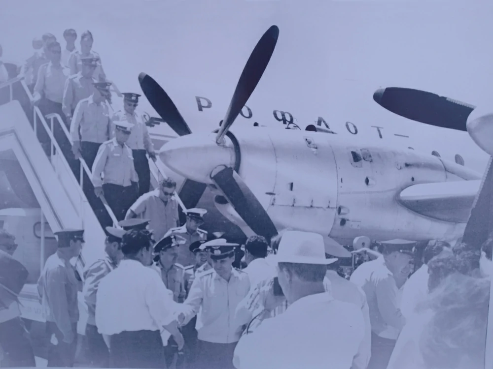

1924-nji ýylda ozalky SSSR-iň "Dobrolýot" howa ulaglary kärhanasynyň Junkers-13 kysymly uçarynda Kazan-Daşoguz-Hywa ugry boýunça ilkinji howa gatnawyny ýerine ýetirýär. 1924-1970-nji ýyllar aralygynda Daşoguz şäheriniň birinji aeroporty Daşoguz şäheriniň merkezinde - häzirki Ýeňiş gününe bagyşlanyp gurlan ýadygärlikler meýdançasynda ýerleşýär. 1930-njy ýyldan başlap, Daşoguz-Aşgabat-Daşoguz aralygynda, 1940-njy ýyldan başlap, Çärjew-Dörtgül-Daşoguz aralygynda howa gatnawlary ýerine ýetirilýär. 1950-nji ýyldan Po-2, Li-2, II-14, we AN-2 kysymly uçarlary bilen, Daşoguz şäheriniň ýanaşyk we daşdaky şäherlerine ýolagçy we ýük gatnawlary, adamlara medisina kömegini etmek üçin howa gatnawlaryny ýerine ýetirip başlaýar. 1968-nji ýyldan başlap, häzirki aeroportyň awiatehniki bazasynyň ýerleşýän ýerinde täze "Ýužnyý" atly aeroportyň howa menzili işe başlan we 1500x30 metr bolan uçuş-gonuş zolagynda An-24 we An-26 howa gämilerini kabul etmäge mümkinçilikler döredilen. Türkmen raýat awiasiýa müdirliginiň 58-nji awiaeskadriliýasynda iki aeroport (Daşoguz şäher aeroporty we "Ýužnyý" aeroporty) arkaly ýolagçylara hyzmat edilendir 1970-nji ýylda Daşoguz şäher aeroportynyň bazasy doly "Ýužnyý" aeroportyna geçirildi we radioelektron enjamlary boýunça desgalar guruldy. 1972-nji ýylda aeroportda täze iki gatly howa menzili we 2000x42 metr bolan uçuş-gonuş zolagy gurlup ulanyşa berildi. 1974-nji ýylda ýokary derejeli howa gämilerini kabul etmäge 2000x42 metr bolan uçuş-gonuş zolagynyň talaplara laýyk gelmeýändigi sebäpli, uçuş-gonuş zolagy gündogar tarapa 700 metr uzaldyldy.1984-nji ýylda sagatda 400 ýolagçy geçirmäge ukyply bolan täze howa menziliniň ýolagçy terminalynyň gurluşygy doly tamamlanyp, ulanyşa berildi. 1997-nji ýyla çenli Daşoguz şäher aeroportyndan Moskwa, Sankt-Peterburg, Ufa we ondan başga Garaşsyz Döwletleriniň Arkalaşygynyň şäherlerine Tu-154, Ýak-42, Ýak-40, An-24, An-26, II-18 howa gämileri arkaly gatnawlar ýerine ýetirilýärdi.
2009-2010-njy ýyllar aralygynda Daşoguz halkara howa menzilinde we "Laçyn" myhmanhanasynda düýpli abatlaýyş işleri geçirilýär we ýolagçylara amatly şertler döredilýär. Daşoguz Halkara howa menziliniň ýolagçy terminaly sagatda 400 ýolagça hyzmat etmäge ukyply bolup, howa menziliniň içinde ýolagçylara medeniýetli hyzmat etmek üçin ähli şertler döredilendir. Daşoguz Halkara howa menzilinden Türkmenistanyň ähli welaýatlaryna barmaga ýolagçylara mümkinçilik döredilen. Daşoguz şäherinde we welaýatyň ähli etraplarynda howa gatnawlary gullugynyň şahamçalary ýerleşdirilip,
raýatlary elektron awiabiletlet bilen üpjün etmekde amatly şertler döredilen. Daşoguz Halkara howa menzilinden ýerine ýetirilýän içerki howa gatnawlary:
- Aşgabat-Daşoguz-Aşgabat;
- Daşoguz-Türkmenbaşy-Daşoguz;
- Daşoguz-Mary-Daşoguz;
- Daşoguz-Türkmenabat-Daşoguz;
- Daşoguz-Balkanabat-Daşoguz.
Daşoguz Halkara howa menziliniň golaýynda ýolagçylara hyzmat etmek üçin 120 orunlyk döwrebap "Laçyn" myhmanhanasy ýerleşýär. Daşoguz Halkara howa menzili ýolagçy gatnatmak, ýük ugratmak, üstaşyr geçýän daşary ýurt howa gämilerine aeronawigasiýa hyzmatlaryny bermekde we AN-2 kysymly uçarlarynda oba hojalyk ekin meýdanlarynda awiahimiki işleri geçirmek boýunça işleri ýerine ýetirýär. An-2 kysymly uçarlarynda Türkmenistanyň oba hojalyk ekin meýdanlarynda ekinleri mör-möjeklerden goramak çäreleri, gowaçanyň ýapragyny düşürmek, hapa-haşal atlara garşy dermanlar we hasylyň ösüşini gowulandyrmak üçin, mineral dökünleri sepmek boýunça möwsümleýin işler geçirilýär. Daşoguz Halkara howa menziline degişli bolan An-2 kysymly uçarlarynda geçirilýän tehniki barlag we dikeldiş işleri öz inžener-tehniki düzümi tarapyndan ýerine ýetirilýär. Hormatly Prezidentimiz Gurbanguly Berdimuhamedowyň ak patasy bilen, 2013-nji ýylyň 17-nji maýyndaky gol çeken №13003 belgili Kararyna laýyklykda, "Türkmenhowaýollary" döwlet milli gullugynyň buýurmagynda Ukrainanyň "Dorožnoýe stroitelstwo "Altkom" jogapkärçiligi çäkli jemgyýetiniň potratçylyk etmekliginde " Daşoguz şäheriniň howa menzilinde uzynlygy 3 800 metr bolan döwrebap emeli uçuş-gonuş zolagynyň we desgalarynyň taslamasyny düzmek we olaryň ýanaşyk ýerleri abadanlaşdyryp gurmak" boýunça gurluşyk işleriniň jemleýji tapgyry alnyp baryldy. Daşoguz Halkara howa menzilinde alnyp barylýan gurluşygyň dowamynda uzynlygy 3800 metre deň bolan beton örtükli doly enjamlaşdyrylan uçuş-gonuş zolagy, howa hereketini dolandyryş binasy we dolandyryş diňi, ýangyç-çalgy ýaglary saklaýjy we merkezleşdirilen ýangyç bilen üpjün ediji toplumy, ýangyna garşy we heläkçilikde halas ediş gullugy binasy we ýene-de birnäçe goşmaça desgalar doly gurlup tamamlandy.